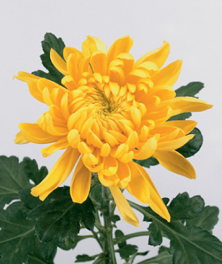
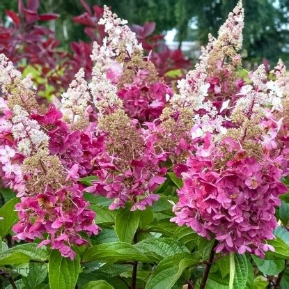
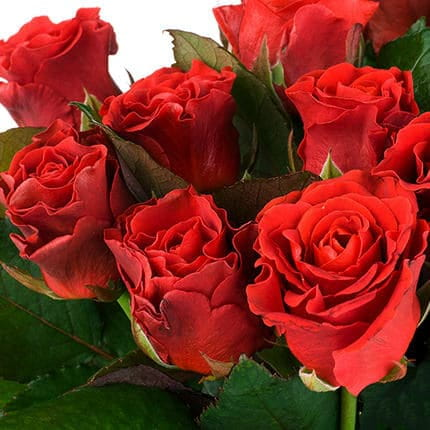

Висота рослини залежить від сорту. Квіти зібрані у суцвіття-кошики від сніжно-білого до темно-фіолетового забарвлення. Квіти виділяють тонкий приємний легким аромат, а листя має сильний, пряний запах. І хоча цвітіння ранніх сортів починається ще у серпні, у всій красі хризантеми постають саме у жовтні.

На високих стеблах велике листя та дрібні квіти, зібрані в пишні суцвіття-щитки. Біло-зелені, рожеві, блакитні суцвіття довго зберігаються на кущі. Гортензія добре переносить легку тінь та півтінь.

Відрізняються витонченою формою квітки, тонким ароматом, безперервним цвітінням. Троянди мають широку кольорову гаму, розмір куща залежить від сорту. Краще росте та цвіте на відкритих місцях.